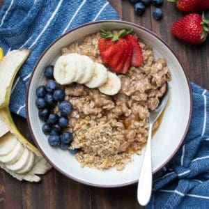

Vegan Oatmeal

Description
Ingredients
- ½ cup rolled oats, gluten-free if needed
- ⅔ cup canned lite coconut milk, or any dairy-free milk (see note)
- 1 tablespoon almond butter, optional (see note)
- 1 tablespoon maple syrup
- ¼ teaspoon vanilla extract
- ¼ teaspoon cinnamon
- pinch sea salt
Steps
-
Add the ingredients into a pot over medium low heat and stir until just
thickening. About 2-3 minutes.
-
Remove from heat and add to a bowl. Use toppings of choice and enjoy!